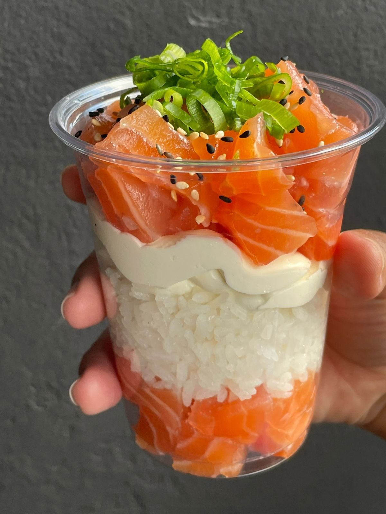

Início · Do seu jeito
Do seu jeito: monte o seu
Poke, sushi dog, sushi burguer, temaki no copo e macarrão ao vivo: você escolhe cada parte, e o preço está ao lado.
Poke
Base, proteína, adicionais e molho
Bases: shari, espaguete de cenoura ou de chuchu, ou sem base. Proteína extra: + R$ 10,00. São 22 adicionais sem acréscimo, de manga a chip de banana-da-terra.
Sushi dog
350 g, com 1, 2 ou 3 proteínas
Sushi burguer
350 g, com 1 ou 2 proteínas
Temaki no copo
450 g no copo

Macarrão ao vivo
500 g, molho e proteínas à escolha
Itens e preços do CardápioWeb da casa (app.cardapioweb.com/amor_in_sushi), lido em 04/10/2026.
Dúvidas frequentes
Perguntas comuns
Como digo o que escolhi?
Toque em “+” e escreva as escolhas (base, proteína, adicionais) na mensagem do WhatsApp antes de enviar.
O temaki no copo vem sem arroz?
Pode: sem arroz custa + R$ 15,00; sem cream cheese, + R$ 6,00.
Peça agora
Escolha as peças, a gente cuida do resto.
Delivery para mais de 150 bairros de Salvador ou retirada no balcão da Rua da União, na Mata Escura. O pedido chega pronto no WhatsApp da casa.